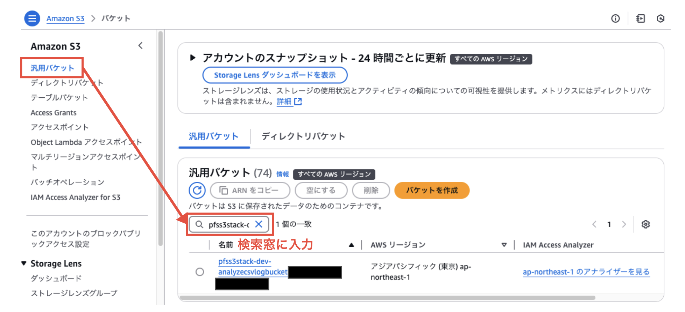
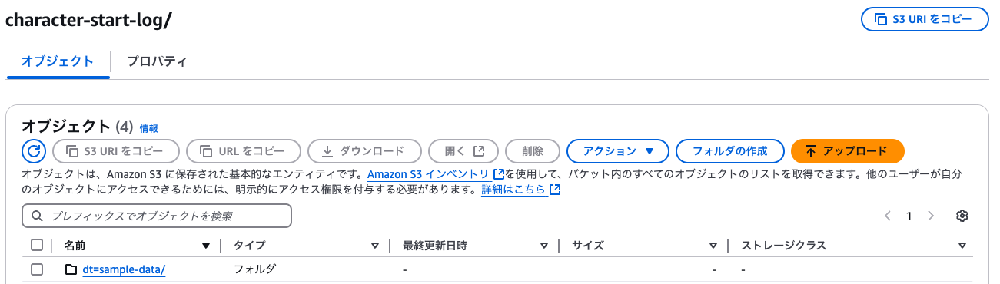
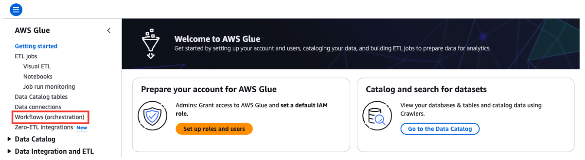
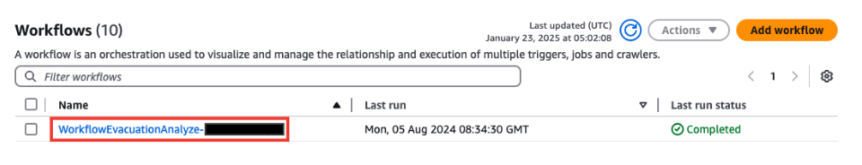
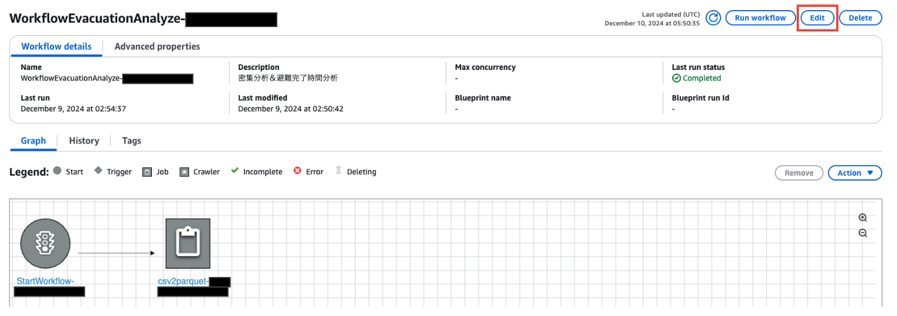
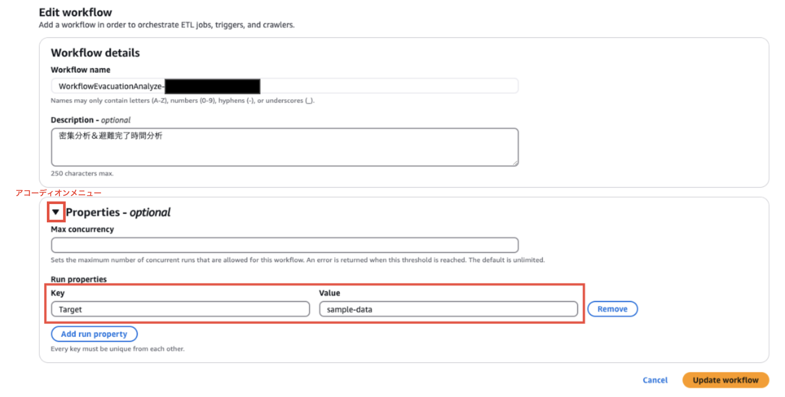
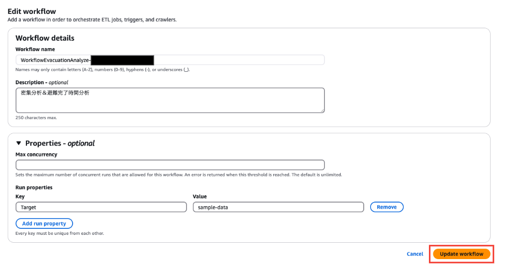
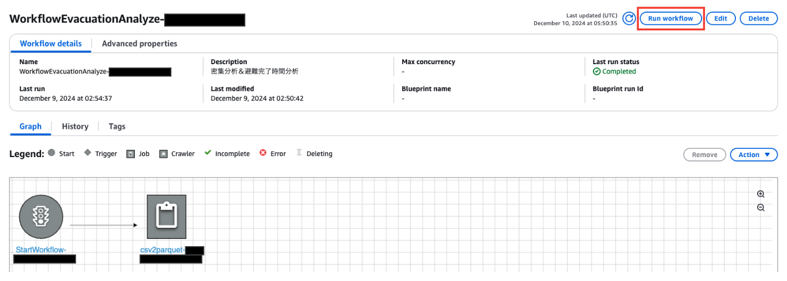
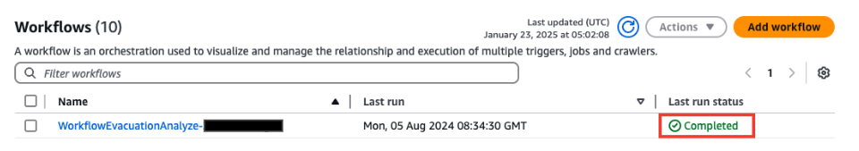
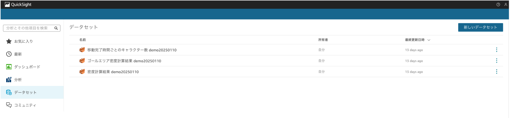

分析の実行
1 本書について
本書では、人流シミュレーション結果分析のためのAWS環境構築用AWS CDKを用いて構築したAWS上の分析環境で、分析結果を確認する方法を説明します。
2 使い方
2-1 概要
- 別途提供の UE4用人流シミュレーションプラグイン を用いて人流シミュレーションを実行した結果の出力ログもしくは人流ログをご用意頂き、環境構築手順 にて事前にデプロイ頂いたS3バケットに配置することで、Glueによるログ加工及びQuickSightでのデータ分析を可能とします（手順は2-2項を参照）。
2-2 サンプル分析の作成手順
- AWSマネジメントコンソールよりs3にアクセスし、以下のバケットを検索します。
- PLATEAU_DEV=devの場合
pfss3stack-dev-analyzecsvlogbucket~

- PLATEAU_DEV=devの場合
- 1で検索したバケットの配下に、 AWSユーザーガイド を参考に以下バケットを作成します。
character-end-log/dt=sample-data character-info-log/dt=sample-data character-start-log/dt=sample-data goal-density-info/dt=sample-data- 以下は
character-start-log/dt=sample-dataを作成した場合のイメージです。 
- 以下は
- 本プロジェクト
mainブランチの以下ディレクトリに格納されている各種サンプルログを、 AWSユーザーガイド を参考に対応するバケットにアップロードします。Contents/sampleLogs - マネジメントコンソールにてAWS Glueにアクセスし、左ペインから
Workflows(orchestration)を選択します。
 - 環境構築手順書にてデプロイしたワークフローを選択し、
Editを押下します。 
 Properties - optionalのアコーディオンメニューを開き、以下のように設定を行います（Valueの項目は手順3で設定したバケット名のdt=以降）。
Key: Target Value: sample-dataUpdate workflowを押下します。
- ワークフローの画面に戻るため、
Run workflowを押下します。

ワークフローの状況については以下のLast run statusから確認が可能です。
こちらがCompletedとなっておりましたらワークフローの完了となります。
 - 8の完了後以下のようにQuickSightの画面にてデータセットが追加されており、そちらから任意の分析を作成できます。

QuickSightでの分析の作成については 公式のユーザーガイド をご確認ください。